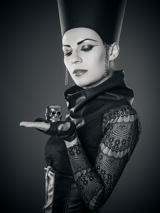

Jestem absolwentką Akademii Sztuk Pięknych w Gdańsku. Moja dusza artystyczna silnie krąży w okół tematu wizażu i stylizacji, co daje wyraz w fotografii. Zajmuję się organizacją sesji zdjęciowych, czyli wszystkim tym, co potrzebne, aby sesja mogła się odbyć - ustalam koncept, przygotowuję stylizacje, wykonuję makijaż, organizuję miejsce sesji oraz czuwam nad całym jej przebiegiem. Współpracuję ze świetnymi fotografami, co jest bardzo ważne, aby oddać sedno wizji.
Kocham sprawiać, że ludzie wyglądają pięknie i czują się wyjątkowi. Do tego zatrzymuję ich niepowtarzalny wygląd na odrobinę dłużej niż jeden dzień. Właśnie dlatego świat kreacji zamknięty w obiektywie jest tak bardzo inspirujący i wzbudza pragnienie tworzenia.
Manipulowanie wyglądem, tworzenie niecodziennego klimatu, dodawanie magicznej aury fotografowanym postaciom to dla mnie rozkosz. Dążę to tego, aby zdjęcie przedstawiało człowieka w sposób zaskakujący, ukazując jego nieznane na co dzień oblicze. Aby dziwiło i zachwycało jednocześnie. Ponad to, wydobywając urodę danej osoby dbam o bogatą oprawę wizualną całej fotografii. Niech zdjęcie jak najbardziej rozpieszcza oko i daje rozkosz.
To co proponuję, to piękno w stylu fashion-art. Bo piękne jest to co intrygujące, niedopowiedziane i nieoczywiste.
Zapraszam do świata awangardowych stylizacji, luksusu i wiecznego piękna.
Monika Szymańska-Dowgielewicz
